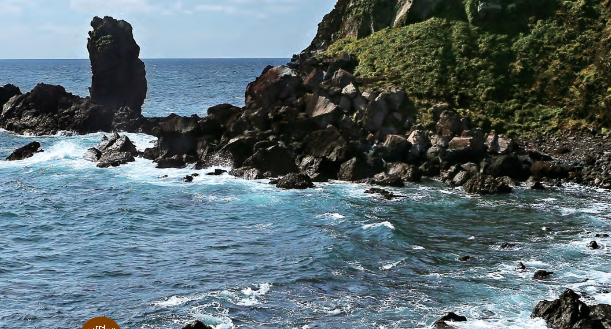
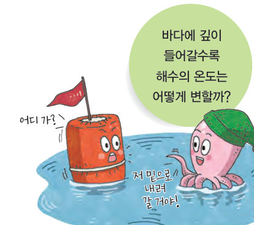
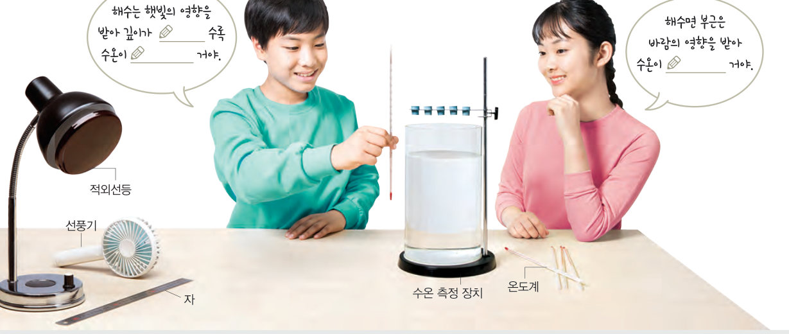
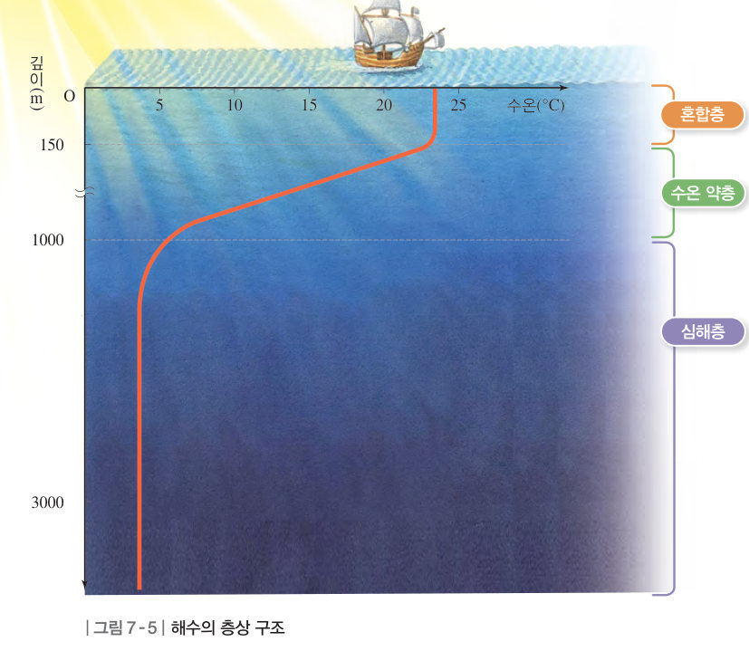
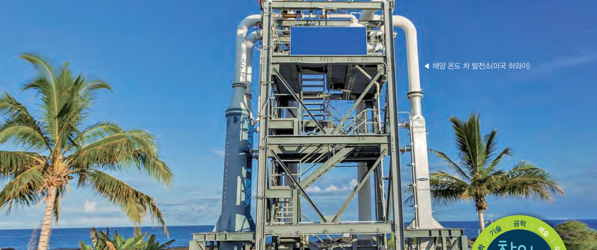

바다에 깊이 들어갈수록 해수의 온도는 어떻게 변할까? 가상 수온 측정 장치에 적외선등과 선풍기를 켜며 깊이별 수온을 기록해 그래프를 그리고, 바다 수온 탐사정으로 위도와 바람에 따른 해수의 층상 구조를 탐험해 보자.
바다를 이루는 해수 — 제주도로 친구들과 놀러 갔어. 바닷가를 산책하며 친구들과 이야기를 나누다가 바다를 이루는 해수가 궁금해졌어. 문득 해수에 대해서 잘 모르고 있다는 생각이 들었지. 해수는 어떤 특징이 있을까?
햇빛을 잘 받는 해수면은 비교적 수온이 높다. 해수면 아래로 깊이 들어가면 해수의 온도가 어떻게 변하는지 다음 탐구로 알아보자.

| 1 단계 — 햇빛을 나타내는 기구 | |
| 2 단계 — 바람을 나타내는 기구 |
| 온도계 | A | B | C | D | E |
|---|---|---|---|---|---|
| 깊이(cm) | 0.5 | 2 | 4 | 6 | 8 |
| 1 단계 수온(℃) 적외선등 | |||||
| 2 단계 수온(℃) 적외선등 + 선풍기 |
해수면 부근에서는 태양 에너지가 대부분 흡수되어 수온이 높으며, 바람이 해수를 섞어 주어 수온이 일정한 층이 나타난다. 이를 혼합층이라고 한다. 혼합층 아래에는 수온이 급격히 변하는 수온 약층이 나타나며, 수온 약층 아래에는 수온이 낮고 일정한 심해층이 나타난다. 해수는 깊이에 따른 수온 변화에 따라 이와 같이 구분한다.

| 바람의 영향을 받아 수온이 일정하다. | |
| 태양 에너지를 대부분 흡수하여 수온이 가장 높다. | |
| 깊이가 깊어질수록 수온이 급격히 낮아진다. | |
| 수온이 낮고 일정하며, 위도에 관계없이 비슷하다. |

해수면 부근은 태양 에너지를 흡수하여 수온이 높고, 특히 열대 바다에서는 수온이 25 ℃ 이상 되기도 한다. 그런데 깊이 500 m~1000 m 이상인 심해에서는 일 년 내내 수온이 4 ℃ 정도로 낮게 유지된다. 이러한 해수의 깊이에 따른 온도 차이를 이용하여 전기를 얻는 것을 해양 온도 차 발전이라고 한다. 해양 온도 차 발전은 이산화 탄소를 발생시키지 않는 신재생 에너지 중 하나이며, 태양광 발전과 달리 낮뿐만 아니라 밤에도 발전이 가능하다.
| 평가 기준 | 스스로 평가 |
|---|---|
| 가설에 맞게 탐구를 설계하였다. | |
| 깊이에 따른 수온 변화를 그래프로 정확하게 변환하였다. | |
| 모둠 구성원과 협력하여 활동하였다. |